Image_3---From Reference-1
NAME:
MUSEO SOUMAYALOCATON:
MEXICO CITY, MEXICOTYPE:
FACADE & INTERIOR CONSTRUCTIONSIZE:
8080M2 OF FACADE SURFACE / 6000M2 OF EXHIBITION SPACEODURATION:
JUNE 2009-MARCH 2011CLIENT
GRUPO CARSOPROJECT MANAGER:
PC CONSTRUCTORESNAIN CONTRACTOR
CARSO INFRAESTRUCTURA Y CONSTRUCCIONDESIGN ARCHITECT
FERNANDO ROMERO ENTERPRISE(FREE) 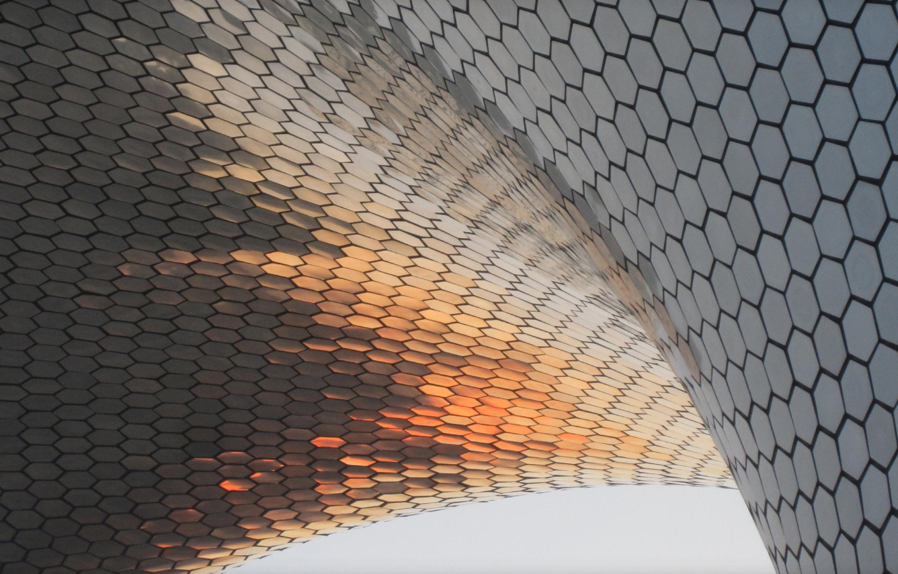Image_2---From Reference-1
We’re going to design and rationalize the facade of the Soumaya Museum by three steps. Gehry Technologies did the whole facade design to fabrication process and we’re going to look into some of the techniques they used to populate and standardize the panels(Image_3).
In the first part of the steps we’ll design the facade and populate it with panels. We’re going to use a variety of tools which include Lunchbox for the panel generation and Kangaroo, a physics engine plugin for Grasshopper, to populate the facade and standardize the panels.
The second part and main part of the course will focus on clustering our panels using Machine Learning. We’ll first look at some example exercises to explain what clustering algorithm we’re going to use, how it works, and why we’ll use it. When we’ve understood the workflow and how the algorithm will cluster our dataset, we’ll move to our facade and extract the necessary information from our panels to feed into the algorithm.
In the last part we’ll analyze the various groups of panels created by the algorithm to see the variation of the panels. Based on that we’ll create a standardized panel per group and repopulate the facade. In the last step we’ll analyze our standardized facade and optimize the distances between the panels.
Thorugh five steps we will figure out the process of the facade be assembled.
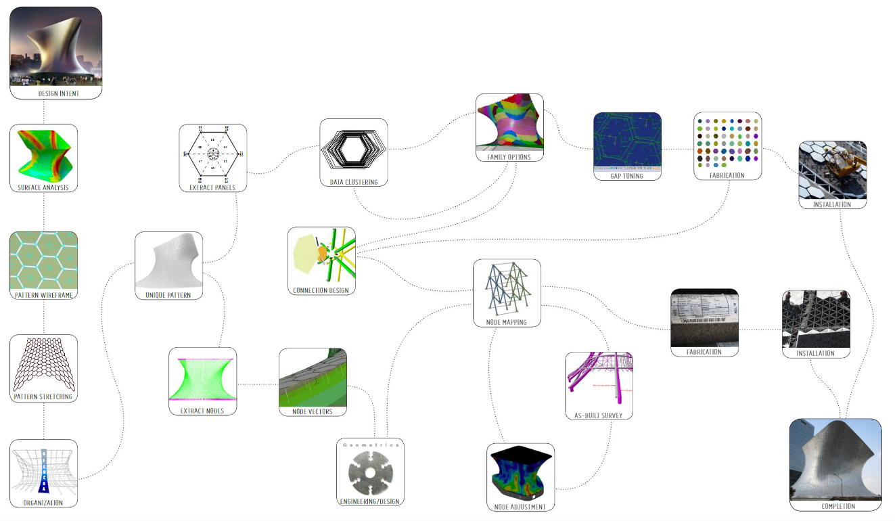Image_3---From Reference-1
The original vision of the architect was have a hexagon pattern with only one size panel. GT implemnented a series of studies to try and achieve the original design intent. However, due to the topology of the irrational master design surface it was agreed that the pattern can not be completed with one panel
Sinece the master design surface could not be modified, GT used a surface rationalization technique that adjusted to the curvature of surface.
Now it is DIY time...
In the first part of the steps we’ll design the facade and populate it with panels. We’re going to use a variety of tools. We compare two diiferent tools to show that what different with results and how important of topology.
On a flat surface with zero curvature the resulting triangles will be equal. However, when the surface is convex or concave the resulting triangles are deformed. This type of rationalization process follows the natural topology of the surface Creating a non-uniform pattern ideal for irrational geometry.
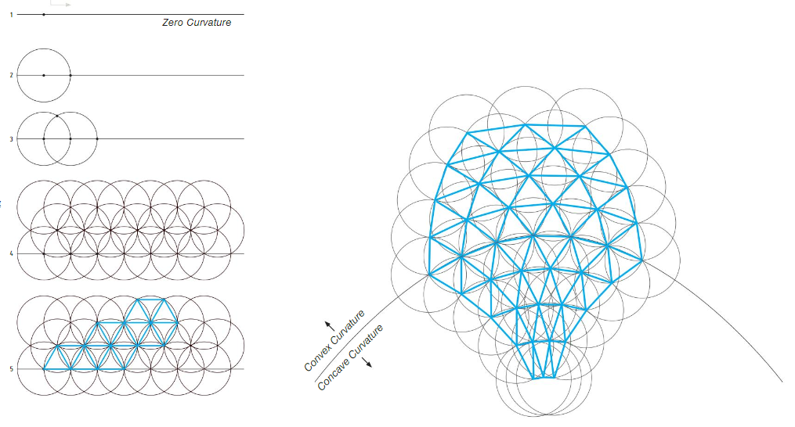Natural Topology---From Reference-1
LunchBox is a plug-in for Grasshopper for exploring mathematical shapes, paneling, structures, and workflow...More+
Panel: 2950
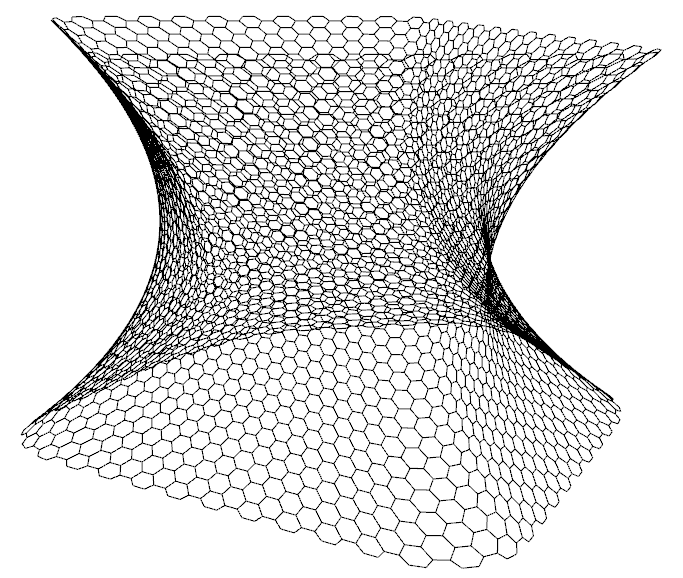Creating by plugin: Lunchbox
Kangaroo is a Live Physics engine for interactive simulation, form-finding, optimization and constraint solving...More+
Panel: 3250
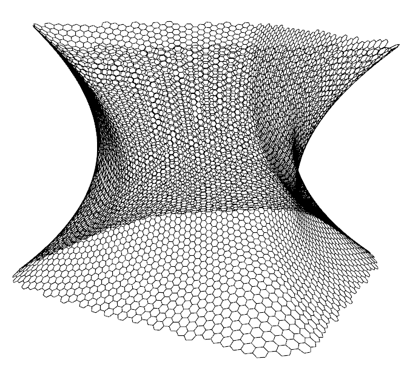Creating by plugin: Kangaroo
Obviously second hexgon panels which made by kangaroo look more smooth than the other. Physics engine and topology give us more options to deal with geometry.
When you model things in 3D, it’s always important that you get the topology right. It makes working with the model far easier and it ends up making you look like a pro modeler. First, let’s define what topology actually is. Topology is the organization, flow and structure of vertices/edges/faces of a 3D model. It is how well you can organize your vertices in your 3D model such that it is efficient, clean and detailed.More+
Plankton is a free and open library implementing the half-edge data structure for polygon meshes...More+
Machine learning (ML) is the scientific study of algorithms and statistical models that computer systems use in order to perform a specific task effectively without using explicit instructions, relying on patterns and inference instead. For all the methods in mechine learning, we going to use clustering methods. Especially, we will introduce Gaussian Mixture Model and K-Means.
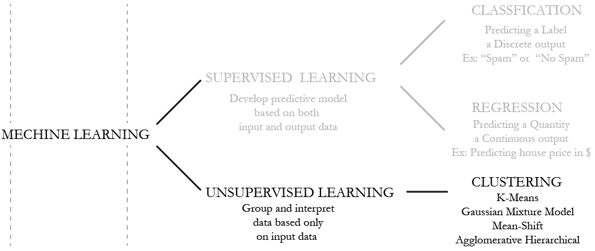Tree diagram about Mechine Learning and brief explaination
It is an algorithm, which classifies samples based on attributes/features into K number of clusters. Clustering or grouping of samples is done by minimizing the distance between sample and the centroid. i.e. Assign the centroid and optimize the centroid based on the distances from the points to it. This is called as Hard Assignment i.e. We are certain that particular points belong to particular centroid and then based on the least squares distance method, we will optimize the place of the centroid.
Advantages of K-Means:
Disadvantages of K-Means:
Instead of Hard assgning data points to a cluster, if we are uncertain about the data points where they belong or to which group, we use this method. It uses probability of a sample to determine the feasibility of it belonging to a cluster.
Advantages:
Disadvantages:
Different between two clustering methods.
In concolusion, We can clearly see that what different we chose between the two methods from picture. It will decide how we populate and rerationalize the panel and. For brief description, we only use CM Clustering to demostrate all the process in this part.
A diagram of Gaussian Mixture where attributes are defined to determine groupings
While people who does not attempt to rationalize the shape, the use of the Gaussian Mixture algorithm can be used to unpack the complexity of the panel system to make decisions about its development. The study could be greatly expanded to include classification based on additional attributes for curvature analysis and panel edge angles.
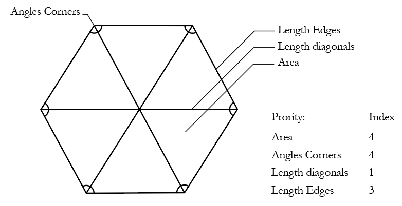part of panel's view
'Why we concern about the? and why area and coner is top of what we concern?
Because of our porpose is find the similar panel on this project and the panel in heigh degree of curvature on the surface have more big deform. Obviously,area be the clearly index and coner degree have same reason too.
The panel: Group-3 to group-11
In the end, we chose area, length edges, length diagonals and angies corners to be our attribiute. Area is our fist piority to find similar panel, second is angies coner. The process will help us to do standardize panel and make them be family.
While we find all the similar panel and group them to be family, we would standardized the panel in last step because the method make all the panel to be same in family. The methods help us save money and time when we assemble the construction.
The resulting family tree of hierarchical clustering algorithm. Panel were compared against each other by chossing a branch of tree. we extract each 6 coners position X-Y and averge them to redefine the panel. The new hexagon panel to alternative all similar panel.
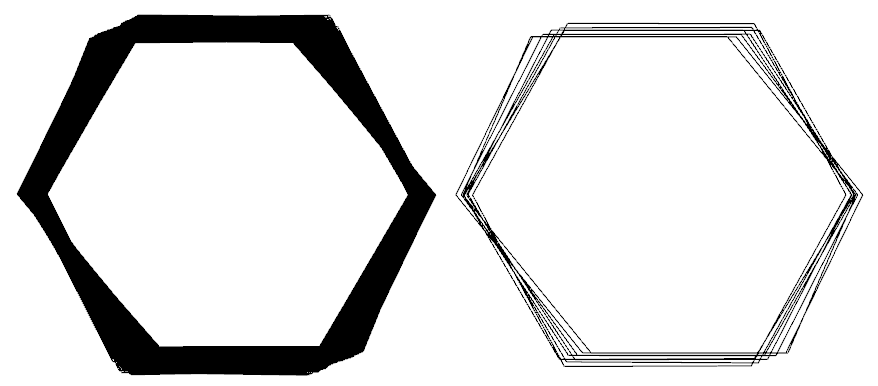One For All:Eight family brench in Image.
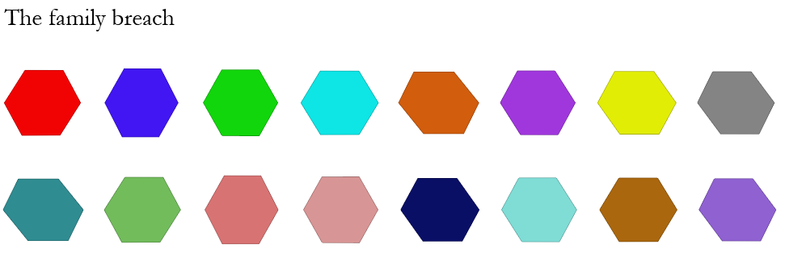We Are Family~
Although the Standardization process help us to assemble the panel but the process will create edge problem. the edge between the hexagon will be discontinuous because Standardization conflict with topology. The only way to solve the porblem is scale the panel, making the gap between them.
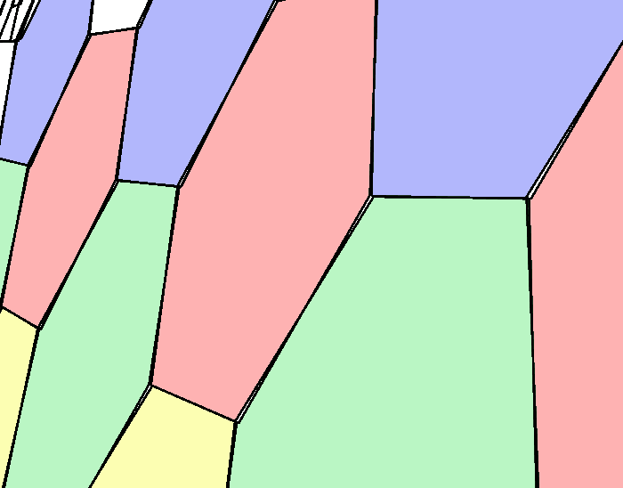The edge beween color
Now we have different gap between different family tree. If the gap is big, the shpae will not touch the Architect's standard. If the gap is small, the worker can not install the panel.
How we find the rational distance between all the family tree?
There is nothing particularly new about Evolutionary Solvers or Genetic Algorithms...More+
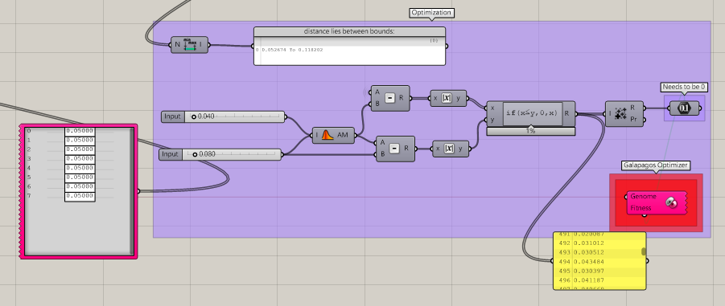Galapago in grasshopper
we’ll create a standardized panel per group and repopulate the facade.
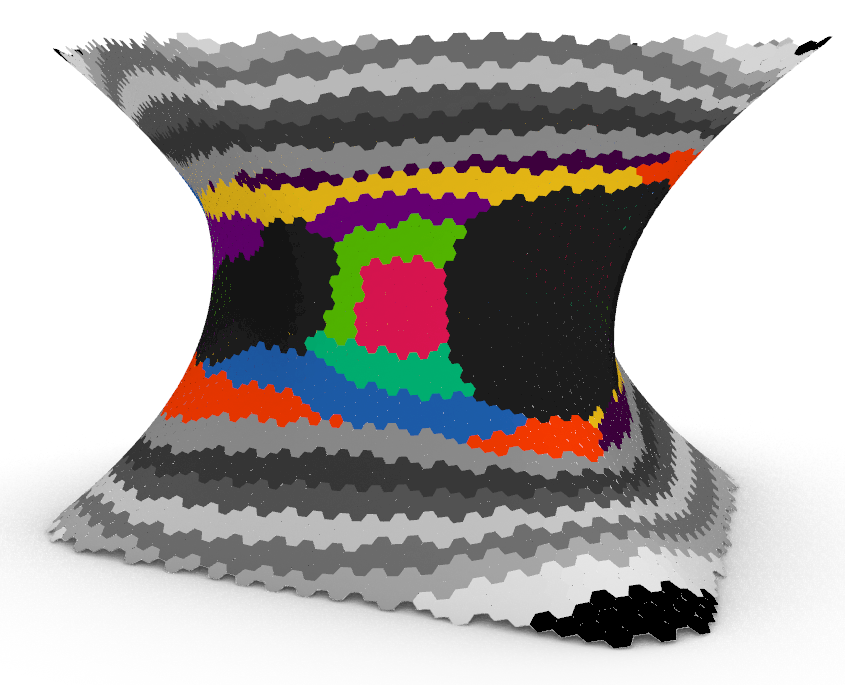panel be group and not create gap
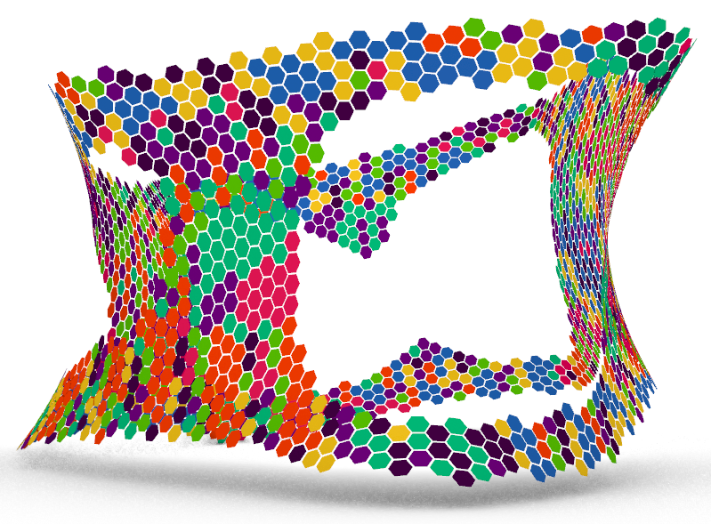panel be group and create gap
To be continued...